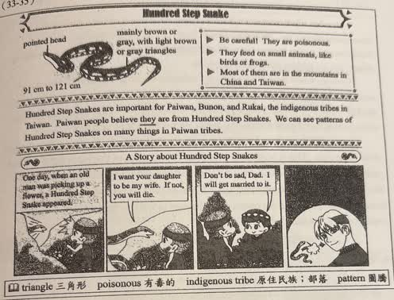
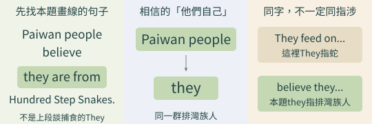
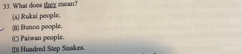
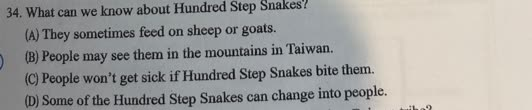

完整原題
作答所需文章／材料
Hundred Step Snake pointed head mainly brown or gray, with light brown or gray triangles 91 cm to 121 cm ▶ Be careful! They are poisonous. ▶ They feed on small animals, like birds or frogs. ▶ Most of them are in the mountains in China and Taiwan. Hundred Step Snakes are important for Paiwan, Bunun, and Rukai, the indigenous tribes in Taiwan. Paiwan people believe they are from Hundred Step Snakes. We can see patterns of Hundred Step Snakes on many things in Paiwan tribes. A Story about Hundred Step Snakes 第一格文字：One day, when an old man was picking up a flower, a Hundred Step Snake appeared. 第二格文字：I want your daughter to be my wife. If not, you will die. 第三格文字：Don't be sad, Dad. I will get married to it. 第四格沒有台詞，畫面請見下方原卷圖。 【原卷字詞】triangle 三角形；poisonous 有毒的；indigenous tribe 原住民族、部落；pattern 圖騰。
英文第33題｜they指涉排灣族人
英文第34題｜區分百步蛇資料與傳說
英文第35題｜從百步蛇圖紋找物品

先想一想，再查看答案、解說與原圖
英文第33題｜they指涉排灣族人
分享原卷｜第33題 · 對話建立日期（Created） 2026-08-30 · 原AI對話 ↗
逐項解析
| 選項與原句 | 判讀 | 句意與判斷理由 |
|---|---|---|
| (A) Rukai people. | 不選 | 不是該句主詞，只在前句族名列舉中出現。 |
| (B) Bunun people. | 不選 | 不是該句主詞。 |
| (C) Paiwan people. | 應選 | Paiwan people believe they are from...，排灣族人相信自己源自百步蛇，故they指排灣族人。 |
| (D) Hundred Step Snakes. | 不選 | 本句被認為是祖先的是百步蛇，they不是指蛇。 |
詳細說明與解題步驟
【圖文完整中譯】
百步蛇：尖的頭部，主要為棕色或灰色，帶淺棕或灰色三角斑紋，長91到121公分。要小心，牠們有毒；以鳥、青蛙等小型動物為食；大多在中國與臺灣的山區。
百步蛇對臺灣的排灣、布農、魯凱等原住民族很重要。排灣族人相信自己源自百步蛇；在部落許多物品上能看到百步蛇圖紋。
下方另以A Story標示故事：老人摘花時遇蛇；蛇要老人把女兒嫁給牠，否則老人會死；女兒說爸爸別難過，願意嫁給牠；最後一格畫出蛇變成男子。最後一格是故事畫面，不是動物會實際變人的科學敘述。
feed on是以……為食，like在此是例如；they的指涉要看所在句子的主詞，不能把不同段落出現的they都當成同一對象。
【題意與代詞指涉】
題目標示的they在Paiwan people believe they are from Hundred Step Snakes裡，意思是排灣族人相信「他們自己」源自百步蛇。最近且合語意的先行詞為Paiwan people，選C。上方說They feed on...的They才是在指蛇，不能只憑同一字就混用。

① 找到畫線they，別跳到上方另一句
本題問的是Paiwan people believe they are from Hundred Step Snakes. 裡的they。先把代名詞所在句子讀完整，不要拿上段介紹蛇時的They直接代入。
② 排灣族人相信，他們自己源自百步蛇
相信這項內容的是Paiwan people，內容中的they也指同一群排灣族人。題目是在文章的文化敘述中找代詞對象，不是把這項信仰當成生物演化的科學結論。
③ 另一句They feed on...，才是在說蛇
上段They feed on small animals.的They指百步蛇；本題believe they ...的they則指排灣族人。同一代名詞在不同句子可指不同對象，要按上下文核對，不是全篇都固定同一個意思。
④ 同一個they，回到所在句子找對象
答案 C：Paiwan people
- 定位Paiwan people believe they ...。
- 這裡的they是相信自己起源的排灣族人。
- 別混淆上段談蛇捕食時的They。
核對註記：已依原卷或完整文字核對並獨立解題；對應教材課次未確認，歸綜合。
原圖（僅本題）

英文第34題｜區分百步蛇資料與傳說
分享原卷｜第34題 · 對話建立日期（Created） 2026-08-30 · 原AI對話 ↗
逐項解析
| 選項與原句 | 判讀 | 句意與判斷理由 |
|---|---|---|
| (A) They sometimes feed on sheep or goats. | 不選 | 資料說鳥或青蛙等小動物，沒有羊或山羊的資訊。 |
| (B) People may see them in the mountains in Taiwan. | 應選 | 原文直接說多見於中國與臺灣山區。 |
| (C) People won’t get sick if Hundred Step Snakes bite them. | 不選 | 原圖明示有毒，不能由本文得出被咬不會生病。 |
| (D) Some of the Hundred Step Snakes can change into people. | 不選 | 變人是另標故事的情節，不是上方的動物習性。 |
詳細說明與解題步驟
【圖文完整中譯】
百步蛇：尖的頭部，主要為棕色或灰色，帶淺棕或灰色三角斑紋，長91到121公分。要小心，牠們有毒；以鳥、青蛙等小型動物為食；大多在中國與臺灣的山區。
百步蛇對臺灣的排灣、布農、魯凱等原住民族很重要。排灣族人相信自己源自百步蛇；在部落許多物品上能看到百步蛇圖紋。
下方另以A Story標示故事：老人摘花時遇蛇；蛇要老人把女兒嫁給牠，否則老人會死；女兒說爸爸別難過，願意嫁給牠；最後一格畫出蛇變成男子。最後一格是故事畫面，不是動物會實際變人的科學敘述。
feed on是以……為食，like在此是例如；they的指涉要看所在句子的主詞，不能把不同段落出現的they都當成同一對象。
【題意與證據】
問從圖文能知道百步蛇什麼資訊。B直接對應in the mountains in China and Taiwan。A把small animals改成羊、山羊，無根據；C與poisonous相反；D把A Story漫畫當成真實動物能力，混淆資料和故事。may表示可能，不是保證在每一座山都看得到。
① 先查分布，B有明文
上方明寫大多在China and Taiwan的mountains。B說人們可能在臺灣山區看到，直接符合；may是可能，不是說每座山一定看得到。
② 食物與毒性，也要照原資料判讀
資料寫small animals，例如birds或frogs，不能自行改成羊或山羊來支持A。又明寫poisonous，因此不能由本文得到C所說被咬也不會生病的結論。
③ A Story是傳說，不是生物能力說明
下方漫畫另標A Story，蛇變成人是故事情節。傳說有文化意涵，但不能直接當成動物實際會變人的證據，因此D不合題意。
④ 先辨資料與故事，再用明文選B
答案 B：可能在臺灣山區看見百步蛇
- 分布線索在上方動物資料區。
- 食物與poisonous按原文，不自行換條件。
- A Story的傳說情節，不等於真實動物能力。
核對註記：已依原卷或完整文字核對並獨立解題；對應教材課次未確認，歸綜合。
原圖（僅本題）

英文第35題｜從百步蛇圖紋找物品
分享原卷｜第35題 · 對話建立日期（Created） 2026-08-30 · 原AI對話 ↗
逐項解析
| 選項與原句 | 判讀 | 句意與判斷理由 |
|---|---|---|
| (A) 圖(A)（見原卷選項圖） | 不選 | 圖(A)未呈現本文用來判讀的百步蛇圖紋線索。 |
| (B) 圖(B)（見原卷選項圖） | 不選 | 不能只因是裝飾柱就當成本文所指的百步蛇圖紋物品。 |
| (C) 圖(C)（見原卷選項圖） | 不選 | 圖(C)人物造型與本文百步蛇斑紋的線索不同。 |
| (D) 圖(D)（見原卷選項圖） | 應選 | 圖(D)衣物上的幾何蛇紋，與本文百步蛇圖案的線索最相合。 |
詳細說明與解題步驟
【圖文完整中譯】
百步蛇：尖的頭部，主要為棕色或灰色，帶淺棕或灰色三角斑紋，長91到121公分。要小心，牠們有毒；以鳥、青蛙等小型動物為食；大多在中國與臺灣的山區。
百步蛇對臺灣的排灣、布農、魯凱等原住民族很重要。排灣族人相信自己源自百步蛇；在部落許多物品上能看到百步蛇圖紋。
下方另以A Story標示故事：老人摘花時遇蛇；蛇要老人把女兒嫁給牠，否則老人會死；女兒說爸爸別難過，願意嫁給牠；最後一格畫出蛇變成男子。最後一格是故事畫面，不是動物會實際變人的科學敘述。
feed on是以……為食，like在此是例如；they的指涉要看所在句子的主詞，不能把不同段落出現的they都當成同一對象。
【題意與讀圖】
問在排灣族部落可能看見哪項物品。先看百步蛇特徵圖及其反覆的三角形圖紋，再比對四幅選項；D衣物的幾何蛇紋最符合文章說部落物品可見百步蛇圖案的線索。
本題依文章及附圖選最貼切者，不表示每種三角紋必定屬某族，也不靠猜A、B、C的族群或材質排除。保留四個原圖選項，沒有用文字自造另一組圖案。

① patterns是圖紋，不只看物品外形
文章說We can see patterns of Hundred Step Snakes on many things in Paiwan tribes. 關鍵是百步蛇圖紋出現在物品上，而不是只要物品看起來古老或有裝飾就符合。
② 先記附圖的三角幾何線索，再比較
上方蛇特徵圖及文字提到三角斑紋，可作本題讀圖的線索。幾何圖提醒我們注意斑紋的形狀；仍要和文章、原卷物品圖一起比對，不能單憑三角紋就判定是哪個族群的文化。
③ 原卷D衣物上的圖紋，最符合材料
回到四個原圖看，D衣物上的幾何蛇紋最貼合本文線索，選D。A、B、C不必猜出族群或材質才能排除；本題是在這組文章與圖片內找最相符者。
④ 從圖紋關鍵字，回到原卷選項比對
答案 D：與本文百步蛇圖紋線索最相符
- 先抓patterns，再比對附圖與原卷選項。
- 不靠猜其他圖的族群、材質或年代排除。
- 本題配對不表示所有三角紋都專屬某一族。
核對註記：已依原卷或完整文字核對並獨立解題；對應教材課次未確認，歸綜合。
原圖（僅本題）